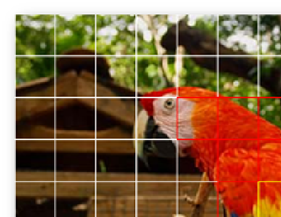
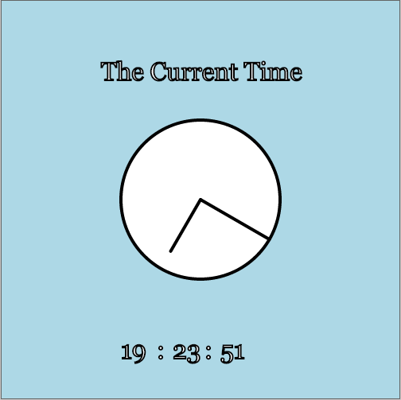

Kylie Gorman
Home
Resume
Projects
Contact
Research
NAO Robot
Created With: Python
An exploration of NAO's capabilities including: Vision, Speech Recognition, and Joint Movement.
Learn More about NAO
SnackTrack
Created With: Objective C
A mobile application to help its users manage their food inventories
Final Presentation

REU: Vision Project
Created With: MATLAB
Creation of a discriminative color descriptor utilizing color moments during my summer at the University of Central Florida Center for Research in Computer Vision
Research Paper
Poster

Javascript Clock
An analog and digital clock created in Javascript
Clock